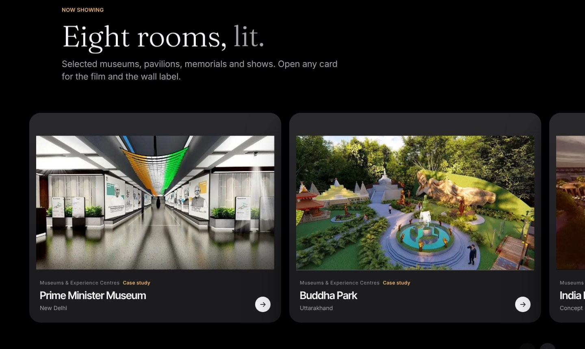
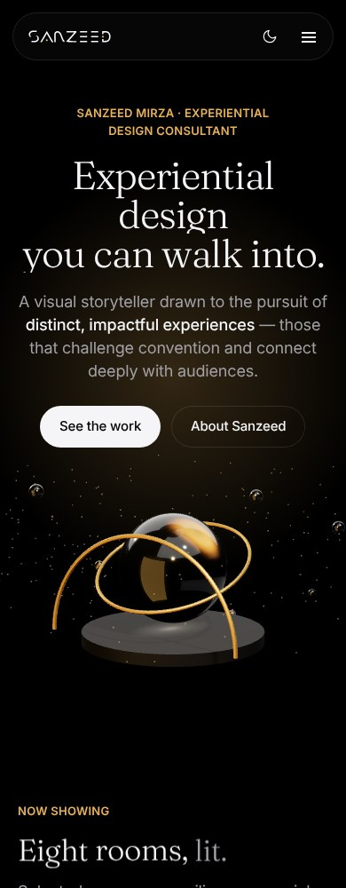
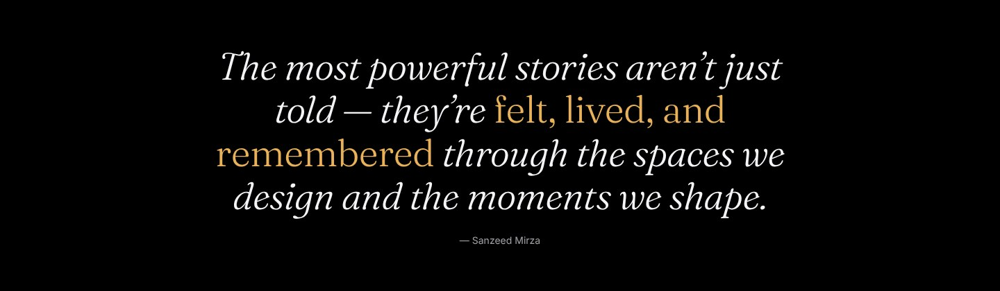
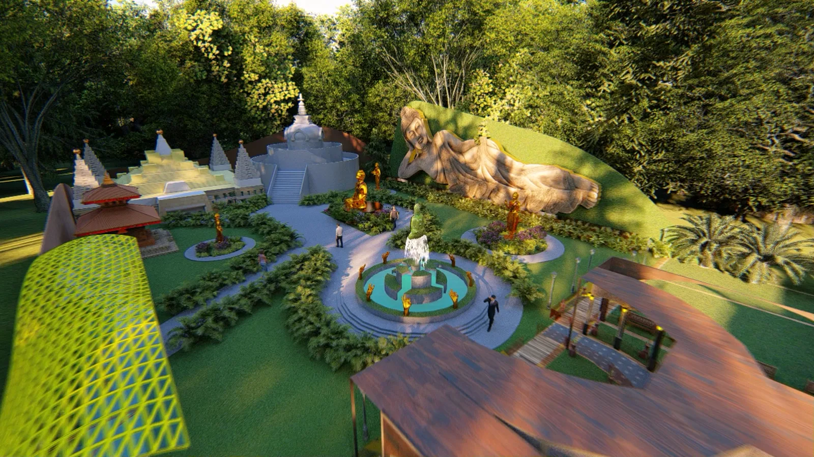
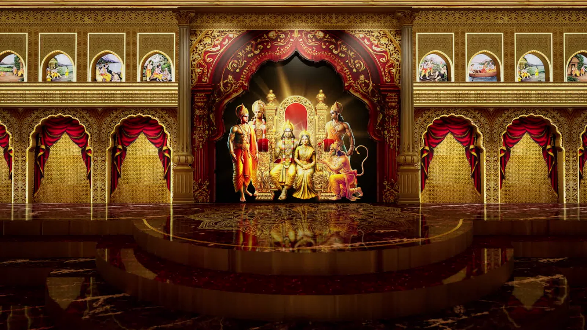

Brand strategy.
Audit · Strategy · Positioning · Voice and tone · Messaging. Everything confirmed on sanzeed.com, and everything the agency recommends, kept apart.
Five documents, one through-line.
- 001Brand auditConfirmed facts · strengths · gaps · opportunities · assumptions03
- 002Brand strategyThe one idea · vision · values · positioning · personality · audience · story · taglines · creative routes · principles11
- 003Brand positioningStatement · map · competitive frame · pillars · proof · naming20
- 004Voice and tonePrinciples · tone by situation · vocabulary · mechanics24
- 005MessagingArchitecture · elevator messages · key messages · headline bank · calls to action28
This document lays out the five markdown files in 01_BRAND_STRATEGY without changing their meaning. Tables, lists and labels are converted from the source files at build time; where a diagram replaces a text sketch (the positioning map, the message architecture) the words are the same.
Brand audit.
Prepared 5 November 2026 · Subject: Sanzeed Mirza, Experiential Design Consultant · Source of truth: the live website at sanzeed.com (fetched 5 Nov 2026, last modified 21 Oct 2026 per sitemap), its three case-study pages, its vCard, JSON-LD, favicon and inline CSS/JS. This audit separates confirmed facts from assumptions and recommendations; nothing in the confirmed column was invented.
Identity and business.
| Item | Evidence |
|---|---|
| Brand name | Sanzeed (wordmark), Sanzeed Mirza (full name, JSON-LD Person) |
| Descriptor | Experiential Design Consultant (title tag, JSON-LD jobTitle, vCard TITLE) |
| Status | Independent consultant since Aug 2026 ("Experiential Design Consultant · Independent Consultant · Aug 2026 — Present") |
| Location | New Delhi, India (JSON-LD address, vCard, footer "Studio New Delhi") |
| Contact | sanzeed@gmail.com · +91 7827051270 (call and WhatsApp) · linkedin.com/in/sanzeed · sanzeed-mirza.vcf |
| Headline | "Experiential design you can walk into." (H1, OG image alt) |
| Short line | "Vision you can walk into." (footer) |
| Positioning sentence | "A visual storyteller drawn to the pursuit of distinct, impactful experiences — those that challenge convention and connect deeply with audiences." |
| About | "I'm an experiential design consultant based in New Delhi, working with institutions and brands wherever the project is. Fifteen years in: first as a concept artist and VFX lead on films and animation, then eight years directing museums, experience centres, pavilions and shows. I lead the whole room — story, space, graphics, media and the team that builds it. The work I want to make is calm to run and impossible to forget once you have walked through it." |
| Proof numbers | 15+ years of experience · 8+ years experiential & museum · 90+ projects directed · 60+ museums & centres |
| Trust line | "Trusted by PwC, Microsoft, Discovery and National Museums, from concept to public unveiling." |
| Three pillars | i. Strategic Vision · ii. Immersive Craft · iii. Calm Leadership |
| Personal quote | "The most powerful stories aren't just told — they're felt, lived, and remembered through the spaces we design and the moments we shape." |
| Commercial promises | "Available for new projects and collaborations. The first conversation is always free." · "I reply within two working days." · "If it is urgent, WhatsApp is fastest." |
| Rights notice | "Employee work for Tagbin, Sociopixel, DWS and B2W; rights remain with those companies." |
Services and method.
1.2 Services (seven, as listed)
- Experiential Design & Creative Direction — "One vision from brief to opening night: narrative, space, media and the team that builds it." (as in Prime Minister Museum)
- Museum & Cultural Exhibition Planning — "Galleries planned as a route, not a floor plan." (Yuge Yugeen Bharat Museum)
- Immersive Storytelling & Narrative Architecture — "The script comes first." (Ram Katha Show)
- Spatial Experience & Environmental Branding — "Brands you can stand inside." (India Pavilion Expo 2025)
- Event Production & Brand Activation — "Shows, launches and tableaux where light and timing do the talking." (G20 Tree Show)
- Digital ↔ Physical Experience Integration — "Projection, AR and VR, sensors and data brought into real rooms and real crowds." (Viratswaroop Kinetic Projection)
- Cross-Functional Leadership & Mentorship — "Designers, writers, architects, producers and technologists moved toward one outcome, calmly." (Buddha Park)
Closing line: "All seven, every time. Every room needs the whole list, held in one hand. That is the job, and the pleasure of it."
1.3 Method (four steps, with stated deliverables)
| Step | Promise | "You receive" |
|---|---|---|
| 01 Discover | Immersion in the subject until the central story reveals itself | a research deck and the one central story |
| 02 Direct | A unifying creative vision that aligns designers, architects, writers, producers and technologists | a concept book and a walkthrough film |
| 03 Craft | Space, light, motion and interaction composed into environments | detail drawings, media scripts and a prototype room |
| 04 Deliver | Concept to launch — on scale, on story, on time | a built, tested and opened experience |
Career and portfolio.
1.4 Career timeline
| Dates | Role | Organisation |
|---|---|---|
| Aug 2026 – present | Experiential Design Consultant | Independent |
| Jun 2018 – Jul 2026 | Creative Director | Tagbin |
| Apr 2018 – May 2018 | Creative Head | Digital Web Solutions |
| Feb 2017 – Mar 2018 | Creative Director | SocioPixels |
| Sep 2011 – Dec 2016 | Lead Concept Artist | Broadcast2world |
| Sep 2011 – Dec 2016 (in parallel) | VFX Artist | Prime Focus |
1.5 Portfolio
- 90 projects in three galleries: Museums & Experience Centres (60), Projection Mapping & Shows (15), Explainer Videos & Others (15).
- Featured "Now showing" set: Prime Minister Museum (New Delhi), Buddha Park (Uttarakhand), India Pavilion Expo 2025 (concept), Yuge Yugeen Bharat Museum (New Delhi), Tribal Museum (New Delhi), RBI Museum Interior (Mumbai), Ram Katha Show (Ayodhya), G20 Tree Show (New Delhi).
- Three written case studies: Prime Minister Museum, Ram Katha Show, Buddha Park, each structured as The brief · The idea · Inside (8 images, numbered 001–008) · The walk · What visitors do · The film · Type / Location / Role.
- Geography: predominantly India (New Delhi, Uttar Pradesh, Uttarakhand, Gujarat, Maharashtra, Punjab, Bihar, Karnataka, Tamil Nadu, Rajasthan, Madhya Pradesh, Goa, Kashmir, Kolkata) plus Abu Dhabi and Dubai.
- Enquiry form: project type (museum or experience centre · pavilion or exhibition · show, launch or event · projection or light show · something else), timeline, budget band (Under ₹25 lakh → Over ₹5 crore).



The site as found.
Screenshots taken 5 November 2026 at 1440 px (desktop) and 390 px (mobile). Each is shown with its wall label, as the site shows its own work.






Existing visual identity, measured.
| Element | Finding |
|---|---|
| Wordmark | Custom geometric uppercase SANZEED as inline SVG (viewBox 3729×561, cap height 500 units, stroke ≈ 64 units). Letterforms: S built from two arcs; A as a crossbar-less triangle; N as an arch; Z; two open three-bar E's; D as a half-round. Two static gold dots (inside the A at its base, inside the D's counter) and an animated gold "beam dot" that travels across the mark with a glow. Fill follows --fg, dots follow --accent. |
| Symbol / favicon | favicon.svg: a dark rounded square (#1d1d1f, radius 14.1/64) carrying the S (two arcs, #f5f5f7) and a gold dot (#e9b25a) at lower right. Also PNG 64 px and 180 px apple-touch-icon embedded as data URIs. |
| Signature | Hand-lettered script "Sanzeed." with a flourish underline, shipped as signature-dark.png / signature-light.png (raster only, used on case-study pages). |
| Hero object | Real-time three.js scene: black glass sphere with a gold orbit ring on a dark plinth, surrounded by gold and black particle "lights"; WebP poster fallbacks (poster-dark.webp, poster-light.webp, 1600×900). |
| Colour — dark theme (default) | bg #000000 · bg2 #0d0d0f · card #1c1c1e · card2 #2a2a2d · fg #f5f5f7 · fg2 #a1a1a6 · fg3 #808086 · accent #e9b25a · accent2 #f4c97a · lines rgba(255,255,255,.10/.06) |
| Colour — light theme | bg #f5f0e7 · bg2/card #fbf8f2 · card2 #ece7dc · fg #1a1816 · fg2 #665f55 · fg3 #6d665c · accent #b8863b · accent2 #d9a64a · accent-text #8a6124 · lines rgba(40,30,10,.10/.055) |
| Functional colour | error #c0392b only; no success/warning/info defined |
| Typography | --serif Fraunces 300 + 300 italic (display headings, stats, pull quote) · --display Inter Tight 400–800 (UI headings) · --text Inter 400–600 (body). All three are Google Fonts under the SIL Open Font License, embedded as data-URI woff2/woff. |
| Shape language | Radius 28 px (cards) and 20 px (small), fully rounded pill buttons, glass header (--glass), thin 1 px hairlines, 16:9 project cards (960×540). |
| Motion | Easing cubic-bezier(.22,.8,.2,1), base duration .4 s, dot pulse 1.1 s, dot idle 6 s loop, line-by-line heading reveal, scroll-pinned Method section that fades steps in sequence. |
| Editorial devices | Gold eyebrow labels in small caps (NOW SHOWING, METHOD, ABOUT, JOURNEY, GET IN TOUCH); last word of headings set in muted grey or gold ("Eight rooms, lit."); three-digit counters "001"; museum vocabulary ("wall label", "visitor's book", "the room", "galleries"). |
| Portrait | One portrait on the About section: subject in black shirt and glasses, night bokeh lights behind, warm key light. |
| Tech stack | Static HTML on Netlify (headers), single 1.3 MB index.html with inline CSS (244 KB) and JS (≈ 0.9 MB incl. three.js module), data-theme dark/light toggle, GoatCounter analytics, Netlify-style enquiry form, /work/.html case pages, /img/.webp (960×540) and /img/case/*.webp, sitemap.xml, robots.txt, vCard. No web manifest, no favicon.ico, no PWA icons, no og.jpg variants per page. |
Strengths and opportunities.
2 Strengths (evidence-based)
- A real idea, already in the copy. "Between two points of light. A brief on one side, a visitor on the other. Seven ways to carry the light across." The gold dot, the travelling beam and the word "lit." all serve this one idea. Few consultancies have a conceptual core this clear.
- Premium restraint. Black, cream and a single gold accent; a light serif for display; generous space. It reads like an institution, which matches the clientele (ministries, national museums).
- Voice with a point of view. First person, short declaratives, spatial metaphors, specific deliverables ("You receive a concept book and a walkthrough film"). It is confident without hype.
- Proof at scale. 90 catalogued projects, three deep case studies, a 15-year timeline, named institutions.
- Working dark/light system already tokenised in CSS custom properties — a head start for a full design-token system.
4 Opportunities
- Codify the existing idea into a complete, ownable system — "the point of light" — instead of inventing a new one. Equity is preserved; recognition compounds.
- Redraw the wordmark geometrically so it survives embroidery, engraving, 16-px favicons and 10-m signage.
- Promote the S-and-dot to a true brand mark, and derive a monogram, app icons and social avatars from it.
- Vectorise the signature as the "personal" layer (letters, thank-you cards, certificates) distinct from the "institutional" layer (wordmark, stationery).
- Build a token-driven website design system so the live site, documents and templates share one source of truth.
- Use the client's own project photography (owned or credited work) as the image library — no stock.
Weaknesses and open questions.
3 Weaknesses and gaps (evidence-based)
- Wordmark is hand-traced, not constructed. Node data is jittery; stroke weight drifts between letters (S heavier than the E bars); the arch-N can be read as a second A ("SAΛZEED") at small sizes. There is no vertical/stacked lockup, no monogram, no clear-space or minimum-size rule, no black/white/grayscale set, and no print format at all.
- The symbol exists only as a 64-px favicon. The S-and-dot has no formal construction, no standalone colour versions, no social-profile version, no app-icon set.
- The signature is raster only — unusable for print at size and inconsistent with the vector system.
- Colour has no production values (no CMYK, no Pantone guidance) and no functional palette beyond one red.
- Typography has no documented scale; sizes are ad hoc clamp() values in CSS.
- No application system: nothing exists for social media, stationery, documents, presentations, motion exports, signage or print.
- Digital hygiene gaps: missing favicon.ico, web manifest and maskable PWA icons; single OG image for every page; apple-touch-icon inlined as base64 rather than served as a file; 1.3 MB HTML because fonts and icons are inlined.
- Brand naming is split between "Sanzeed" (mark) and "Sanzeed Mirza" (SEO, OG, legal). This is fine, but it needs a rule.
5 Assumptions and open questions (not confirmed by the site)
| Topic | Assumption used in this package | To confirm with Sanzeed |
|---|---|---|
| Legal entity | Sole proprietor trading as "Sanzeed Mirza"; no registered company name, GSTIN or address beyond "New Delhi" | Registered name, GSTIN, PAN, postal address and bank details for invoice/quotation templates (left as fillable fields) |
| Audience | Government ministries and cultural institutions, museum authorities, corporate experience-centre owners, event and exhibition agencies, architects and fabricators who need a creative lead | Confirm priority segments and any sectors to avoid |
| Pricing | Budget bands from the enquiry form imply projects from ₹25 lakh to ₹5 crore+ | Confirm whether day-rate consulting is also offered |
| Competitors | Indian experiential studios (including the former employer Tagbin), international museum-design practices | Confirm whom the client is most often compared with in pitches |
| Image rights | Project images shown on the site are used here as "approved imagery"; the site itself states rights remain with the former employers | Confirm which images may appear in marketing beyond the portfolio |
| Social accounts | Only LinkedIn is confirmed; Instagram, X, YouTube, Facebook, Pinterest are assumed to be new or future accounts | Confirm handles (recommended handle: @sanzeed everywhere) |
| Name usage | Wordmark "SANZEED" for the brand, "Sanzeed Mirza" for formal/legal/SEO | Confirm |
Next: Brand_Strategy.md builds on this audit. Nothing in that document contradicts a confirmed fact above; where it goes beyond the site, it is labelled as a recommendation.
Brand strategy.
Sanzeed Mirza · Experiential Design Consultant · New Delhi · Version 1.0 · 5 November 2026. Everything marked Confirmed is taken from sanzeed.com. Everything marked Recommendation is the agency's proposal and should be read as a decision for Sanzeed to accept, adjust or reject.
The one idea.
Carry the light across. Recommendation derived from confirmed copy
The site already says it: "Between two points of light. A brief on one side, a visitor on the other. Seven ways to carry the light across." A client arrives with an intention; a visitor leaves with a memory. Sanzeed's work is everything in between — the story, the room, the light, the timing, and the team — carried across without dropping it.
Every part of this identity serves that idea:
- The point of light — the gold dot. It is the brand's smallest unit and its most recognisable: it sits in the wordmark, ends the signature ("Sanzeed."), closes headlines ("lit."), and becomes the symbol.
- The beam — the horizontal line the dot travels along. It is the route through a museum, the timeline of a career, the hairline rule in a document.
- The room — the dark field everything sits in. Black is not a background colour here; it is the gallery before the lights come up.
Between two points of light. A brief on one side, a visitor on the other. Seven ways to carry the light across.
sanzeed.com · Services · ConfirmedVision, mission, purpose and values.
2 Vision, mission, purpose
| Statement | Status | |
|---|---|---|
| Vision | Experiences people walk into and never quite leave. | Recommendation — compresses "impossible to forget once you have walked through it" Confirmed |
| Mission | To lead the whole room — story, space, graphics, media and the team that builds it — so that institutions and brands open experiences that are calm to run and impossible to forget. | Confirmed wording, restructured |
| Purpose | Because the most powerful stories aren't just told — they're felt, lived and remembered through the spaces we design and the moments we shape. | Confirmed Sanzeed's own quote |
3 Values
- Story first. "The script comes first. Every room, screen and surface carries a line of it."
- The route, not the floor plan. Experiences are sequenced for a human walking through them, in order, with dwell time.
- Whole-room responsibility. "All seven, every time. Every room needs the whole list, held in one hand."
- Calm leadership. Designers, writers, architects, producers and technologists "moved toward one outcome, calmly."
- Built, tested, opened. "On scale, on story, on time." Ambition is only real once the doors open.
Positioning and promise.
4 Positioning
For museums, cultural institutions, government bodies and brands that must open a public experience at national scale, Sanzeed Mirza is the independent experiential design consultant who carries one creative vision from the brief to opening night — narrative, space, media and the team — in one person, unlike large studios where strategy, design and delivery are handed between departments, or architects and AV integrators who each own only part of the room.
Category: Experiential design and creative direction (museums, experience centres, pavilions, memorials, projection and light shows). Frame of reference: museum-design and experiential studios; the client's prior employer Tagbin sits in the same frame. Point of difference: fifteen years that run from VFX and concept art to directing 60+ museums and centres — one person who can write the story, draw the room, script the media and run the floor. Reason to believe: 90 projects directed, three published case studies, Prime Minister Museum / Ram Katha Show / Buddha Park, institutional commissioners, a method with named deliverables at each step.
5 Brand promise
"One vision, carried across — from the brief to opening night." Supported by three confirmed commitments: the first conversation is free; a reply within two working days; a named deliverable at every step of the method.
6 Personality and archetype
Archetype: The Creator, tempered by The Sage. The Creator makes things of enduring value; the Sage brings calm, research and judgement. Together: a maker who thinks before building and stays composed while building at monumental scale. (Not The Magician: the brand does not sell spectacle; it sells spectacle held in a steady hand.)
Five personality traits (use as a checklist for every piece):
| Trait | What it looks like | What it never looks like |
|---|---|---|
| Calm | Space, one accent colour, short sentences | Shouting, gradients everywhere, exclamation marks |
| Precise | Numbered steps, named deliverables, 001 counters, wall-label captions | Vague adjectives ("innovative", "cutting-edge") |
| Monumental | Large light serif headlines, a single object on a dark field | Clutter, many small things competing |
| Warm | Gold light, first person, "the first conversation is always free" | Corporate distance, "we at our firm" |
| Curious | "Every environment begins as a question" | Pre-packaged solutions |
Audience and difference.
7 Audience
| Segment | Who | What they need from Sanzeed | Proof they look for |
|---|---|---|---|
| Institutional commissioners | Ministries, museum authorities, cultural trusts, state tourism boards | A creative lead who can be trusted with national-scale, politically visible projects and deliver on opening day | Prime Minister Museum, Yuge Yugeen Bharat, Ram Katha Show; calm leadership; method with deliverables |
| Corporate experience owners | Brands building experience centres, pavilions, boardrooms, launches (e.g. RBI, DLF, BE, ICI, ONGC-type stalls) | "Brands you can stand inside" — spatial storytelling that makes a brand physical | Experience-centre gallery; Digital ↔ Physical integration |
| Delivery partners | Architects, exhibition fabricators, AV/projection integrators, event agencies | A creative director who joins their bid and leads the narrative and media design | Cross-functional leadership; projection-mapping shows |
| Former-employer ecosystem | Studios needing a senior independent director on specific mandates | Availability "for select consulting, creative direction and collaboration mandates" Confirmed | Timeline, seven services |
Decision-makers are senior (secretaries, directors, CMOs, founders); influencers are curators, project managers and architects. Both respond to proof, precision and composure — hence the editorial, institutional tone.
8 Differentiation and USP
USP: The whole room in one hand. A single consultant who has personally done every layer — concept art, VFX, animation, museum narrative, spatial design, show direction, team leadership — and therefore holds the entire experience together without hand-offs.
Differentiators
- Breadth with depth — film/VFX craft and museum-scale direction in one career.
- Narrative architecture — galleries planned as routes; the script before the floor plan.
- Named deliverables — research deck, concept book, walkthrough film, prototype room, opened experience.
- Calm at scale — national projects "commissioned by ministries and top institutions" run without drama.
- Independent — no studio overhead or department hand-offs; direct access to the person who leads.
The brand story.
9 Brand story (long form)
Sanzeed Mirza started where light is made by hand: in VFX suites and concept-art studios, drawing the frames that brands and films would later build. For five years he learned how a single image carries an idea.
Then the frame became a room. From 2018 he directed museums, experience centres, pavilions and shows at national scale — the Prime Minister Museum in New Delhi, where visitors walk a tricolour corridor and meet one leader at a time; the Ram Katha Show in Ayodhya, where the script came first and every surface carried a line of it; Buddha Park in Uttarakhand, where the walk itself is the meditation.
Ninety projects later, the method is simple to say and hard to do: discover the one central story, direct a single vision across every discipline, craft space, light, motion and interaction into a room, and deliver it — built, tested and opened. In 2026 he began working independently, so that institutions and brands can bring the whole room to one person.
A brief on one side. A visitor on the other. Sanzeed carries the light across.


The most powerful stories aren't just told — they're felt, lived, and remembered through the spaces we design and the moments we shape.
Sanzeed Mirza · sanzeed.com · ConfirmedThe tagline system.
10 Tagline system
| Level | Line | Use |
|---|---|---|
| Master line | Experiential design you can walk into. Confirmed keep | Website H1, OG image, email signature, profile bios |
| Short form | Vision you can walk into. Confirmed keep | Footer, business card reverse, presentation end-slide |
| Conceptual line | Carry the light across. | Brand film, guidelines cover, internal rallying line |
| Proof line | 90 projects, one continuous craft. Confirmed | Media kit, proposals |
| Personal line | Strategy, craft and calm leadership, in one person. Confirmed | About pages, LinkedIn headline |
Rejected alternatives (for the record): "Rooms that remember" (too poetic for institutional buyers), "Stories you can stand inside" (overlaps with service 04 copy), "Design for the monumental" (loses the visitor).
11 Creative direction — three routes evaluated
Three visual routes were developed to the same depth before choosing. The chosen route is A.
Three routes, one decision.
Three visual routes were developed to the same depth before choosing. Route A is built here from the real assets of this package; B and C are abstract tiles that stand for the rejected directions.

lit.
NIGHT
Route A — “The Point of Light” (recommended, and chosen)
Evolve and construct what exists. Keep black/cream and the gold accent; redraw the wordmark as a true geometric construction; promote the S-and-dot to a brand mark; build the graphic language from the dot, the beam and the room; keep Fraunces + Inter Tight + Inter.
- For: preserves two weeks-old equity the client clearly invested in; the conceptual core is already in the copy; premium and institutional; survives print, signage and motion; honours the brief's instruction to build from existing materials.
- Against: less of a "big reveal"; dark-first systems need careful light-mode and print rules (solved in the colour system).
Route B — “The Plan”
Architectural drawing language. Monochrome ink on paper, blueprint grids, floor-plan diagrams as graphic devices, a signal-red accent, a grotesque typeface.
- For: distinctive in the museum-design category; highly systematic.
- Against: reads as an architecture practice rather than a storyteller; discards the gold "light" idea and the existing wordmark; cold where the brand is warm.
Route C — “Spectacle”
Projection-mapping energy. Saturated light gradients (magenta, cyan, amber), motion-blur typography, full-bleed show photography, heavy display type.
- For: dramatic, social-media friendly, communicates the show work instantly.
- Against: contradicts "calm leadership"; dates quickly; weak on paper and in institutional proposals; would make the national-museum work look like event marketing.
Decision: Route A. The remaining phases of this package implement it.
Design principles for the system.
12 Design principles for the system (Route A)
- One light source. One gold accent per composition. Never two competing accents.
- Dark is the gallery, cream is the label. Dark surfaces for immersion (screens, hero, social); cream/paper for reading (documents, print, light mode).
- Serif speaks, sans works. Fraunces for headlines, statements and large numerals; Inter Tight for UI headings and labels; Inter for body.
- End with the dot. Headlines, signatures and lockups terminate in a gold point.
- Space is the luxury. Generous margins and clear space; the logo is never crowded.
- Numbered, labelled, sequenced. 001/002, STEP 01, "Wall label": the museum's editorial devices are the brand's.
- Move like light, not like a bounce. Ease-out curves, dot travel along lines, glow — never elastic or playful easing.
13 What this package deliberately does not change
- The brand name, descriptor, contact details and all confirmed copy.
- The existing colour relationships (black / cream / gold) and typefaces.
- The site's information architecture.
What it changes: construction quality, completeness, production readiness, and documentation.
Brand positioning.
Where Sanzeed stands against studios, architects, fabricators and show producers — and the words that keep the name straight.
Story-led and whole-room.
Positioning statement
For museums, cultural institutions, government bodies and brands that must open a public experience at national scale, Sanzeed Mirza is the independent experiential design consultant who carries one creative vision from the brief to opening night — narrative, space, media and the team — in one person. Unlike large studios, where strategy, design and delivery are handed between departments, or architects and AV integrators who each own only part of the room, Sanzeed holds the whole room in one hand.
Sanzeed sits bottom-right: story-led and whole-room. The nearest neighbours are full-service museum-design studios; the difference is that Sanzeed offers that breadth as an individual creative lead, with film/VFX craft that most museum studios buy in.
Frame and pillars.
Competitive frame
| Type | Examples (frame of reference, not claims about the client) | How Sanzeed is positioned against them |
|---|---|---|
| Indian experiential / digital-museum studios | Tagbin (former employer, 2018–2026) and comparable studios | Same portfolio DNA; Sanzeed offers direct senior access, independence, and a story-first method |
| International museum-design practices | Large multidisciplinary exhibition designers | Comparable rigour at Indian-market scale and budget bands (₹25 lakh – ₹5 crore+) |
| Architects and interior firms | Practices that design the building and subcontract interpretation | Sanzeed leads the narrative, media and show layer they do not own |
| AV / projection / fabrication vendors | Integrators and show-tech houses | Sanzeed scripts and directs; vendors execute |
Brand pillars
| Pillar | Confirmed source | Expression in the identity |
|---|---|---|
| Strategic Vision | "Transforming complex ideas into cohesive, purposeful stories — concept through launch." | The beam: one line from brief to visitor |
| Immersive Craft | "Environments that engage intellectually, emotionally, and physically across every touchpoint." | The room: dark field, single lit object, large serif |
| Calm Leadership | "Guiding designers, writers, architects, producers and technologists toward unified outcomes." | Restraint: one accent, measured motion, precise labels |
Proof, naming, gaps.
Proof points (all confirmed)
- 15+ years · 8+ years experiential & museum · 90+ projects directed · 60+ museums & centres
- Prime Minister Museum, New Delhi · Ram Katha Show, Ayodhya · Buddha Park, Uttarakhand · Yuge Yugeen Bharat Museum · India Pavilion Expo 2025 (concept) · G20 Tree Show · Army Museum Abu Dhabi · Dubai Police Control Center
- "Trusted by PwC, Microsoft, Discovery and National Museums"
- Named deliverables at every step: research deck → concept book + walkthrough film → detail drawings, media scripts, prototype room → built, tested, opened experience
Naming rules
| Context | Use |
|---|---|
| Brand mark, wordmark, social handles, domain | SANZEED / Sanzeed / @sanzeed |
| Formal, legal, SEO, bylines, invoices, proposals | Sanzeed Mirza |
| Descriptor (always with the full name on first use) | Experiential Design Consultant |
| Never | "Sanzeed Studio", "Sanzeed Design", "Mirza Design" — the brand is the person |
Missing information (to be supplied by Sanzeed)
- Registered business name, GSTIN/PAN, postal address and bank details for invoices and quotations.
- Confirmation of priority audience segments and any sectors to decline.
- Confirmation of which project images may be used outside the portfolio context.
- Social handles beyond LinkedIn.

Voice and tone.
A museum's wall label, written by the person who built the room. Precise, calm, first person, short.
The voice in one line.
A museum's wall label, written by the person who built the room.
Brand_Voice_and_Tone.mdVoice principles (with confirmed examples from sanzeed.com)
| Principle | Do | Example from the site |
|---|---|---|
| First person, singular | "I", "me", "my". The brand is one person. | "I lead the whole room — story, space, graphics, media and the team that builds it." |
| Short sentences, long ideas | One thought per sentence. Let a full stop land. | "The script comes first. Every room, screen and surface carries a line of it." |
| Name the deliverable | Say what the client receives, concretely. | "You receive a concept book and a walkthrough film." |
| Spatial vocabulary | Rooms, routes, thresholds, galleries, light, dwell time, opening night. | "Galleries planned as a route, not a floor plan." |
| End on the image | Finish paragraphs on a picture, not a claim. | "Visitors walk the whole line of leaders without a map, and come out knowing the order by heart." |
| Plain numbers | Numerals, no inflation. | "90 projects, one continuous craft." |
| Warm, not casual | Hospitable; never slangy or jokey. | "Tell me about the room. A few lines are enough." |
Tone by situation.
Tone by situation
| Situation | Tone dial | Example |
|---|---|---|
| Website headline / hero | Monumental, quiet | "Experiential design you can walk into." |
| Case study | Documentary, sequenced ("The brief · The idea · The walk · What visitors do") | "A corridor you walk in order." |
| Proposal / quotation | Precise, deliverable-led, no adjectives | "Step 02 — Direct. You receive a concept book and a walkthrough film." |
| Email / WhatsApp reply | Warm, brief, specific next step | "Thank you for writing. I've read the brief twice. Could we speak on Thursday for twenty minutes?" |
| LinkedIn post | Observational, one insight, one image | "The spine of the museum is a single long passage. The building tells the story before any gallery does." |
| Social caption | Wall-label: title, place, one line | "Ram Katha Show · Ayodhya. The script came first." |
| Error / empty states | Helpful, unhurried | "Nothing in this room yet. Try another filter or clear the search." |
| Thank-you / after opening | Personal, signed | "The doors are open. Thank you for trusting me with the room. — Sanzeed." |
Vocabulary
Use: room · route · threshold · gallery · walk · light · lit · carry · opening night · wall label · visitor's book · the one central story · concept book · walkthrough film · prototype room · calm · held in one hand · monumental
Avoid: cutting-edge · innovative · world-class · synergy · leverage · immersive (as a filler adjective — use only as the named service) · solutions · best-in-class · passionate · 360° · wow
Mechanics and the three tests.
Mechanics
- Headlines: sentence case, end with a full stop. The last word may be set in the muted or gold colour ("Eight rooms, lit.").
- Eyebrows: small caps, letter-spaced, gold: NOW SHOWING · METHOD · ABOUT · JOURNEY · GET IN TOUCH.
- Counters: three digits, "001". Steps: "STEP 01".
- Dashes: spaced em dash on the website ( — ); en dash for ranges (2018 – 2026).
- Currency: ₹ with Indian grouping (₹25 lakh, ₹1 crore).
- Dates: "Aug 2026 — Present"; "5 November 2026" in documents.
- Sign-off: "— Sanzeed Mirza" (quotes), "Sanzeed." (signature mark), "Sanzeed Mirza · Experiential Design Consultant" (formal).
Three test sentences for any new copy
- Could this be read aloud, calmly, in a museum lobby?
- Does it name a room, a route, a light or a deliverable?
- Would deleting the adjectives make it stronger? (If yes, delete them.)

Messaging.
The architecture of what is said, from the master line to the call; elevator messages at three lengths; key messages by audience; the approved headline bank.
Message architecture.
The eight lines everything else is built from, in order, each with its status.
Elevator messages
Key messages and the headline bank.
Key messages by audience
| Audience | Lead message | Support |
|---|---|---|
| Institutional commissioners | A national-scale experience needs one steady creative hand from brief to opening night. | 60+ museums & centres; Prime Minister Museum; "On scale, on story, on time." |
| Corporate experience owners | Brands you can stand inside. | Experience-centre portfolio; Digital ↔ Physical integration; India Pavilion Expo 2025 concept |
| Architects and fabricators | I lead the story, media and show layer so your building opens with a reason to walk through it. | Cross-functional leadership; seven services; named deliverables |
| Press and juries | The most powerful stories are felt, lived and remembered through the spaces we design. | Three case studies; 90-project gallery |
Headline bank (approved style)
- Experiential design you can walk into.
- Vision you can walk into.
- Eight rooms, lit.
- Between two points of light.
- A method for the monumental.
- 90 projects, one continuous craft.
- Strategy, craft and calm leadership, in one person.
- Fifteen years, one through-line.
- Let's shape something that endures.
- Tell me about the room.
- Carry the light across. (new)
- One vision, from the brief to opening night. (new)
- The script comes first. (from service copy)
- Galleries planned as a route, not a floor plan. (from service copy)
Calls, promises and the signature.
Calls to action
| Primary | Secondary | Tertiary |
|---|---|---|
| Tell me about the room → | See the work | WhatsApp @sanzeed |
| Write in the visitor's book → | About Sanzeed | Save contact |
| Get in touch | Watch the film |
Response promises (confirmed, repeat consistently)
- "The first conversation is always free."
- "I reply within two working days."
- "If it is urgent, WhatsApp is fastest."
Email signature text
Sanzeed Mirza Experiential Design Consultant +91 7827051270 · sanzeed@gmail.com · sanzeed.com Experiential design you can walk into.

Tell me about the room.
The first conversation is always free. I reply within two working days. If it is urgent, WhatsApp is fastest.
Sanzeed Mirza · Experiential Design Consultant
+91 7827051270 · sanzeed@gmail.com · linkedin.com/in/sanzeed · sanzeed.com · New Delhi, India